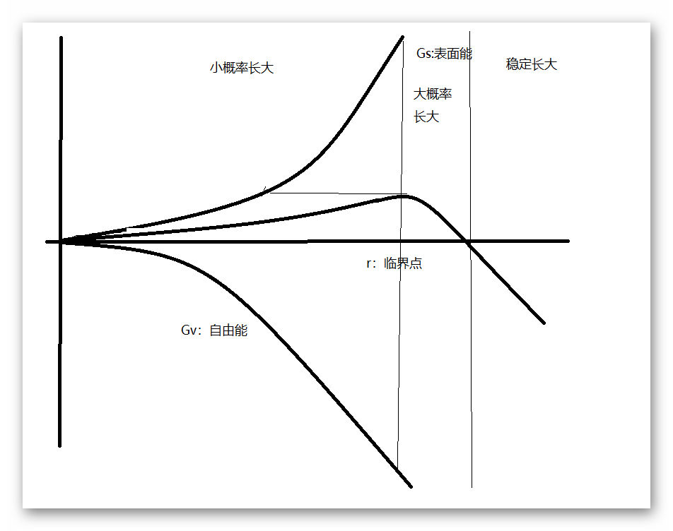

| 半导体材料 | |
目录： 第一章之相图 第二章之晶体生长 第三章之硅和锗的制备 第四章之材料基本性质 第五章之区熔提纯 第六章之杂质与缺陷 第七章之硅的外延生长 第八章之Ⅲ-Ⅴ化合物 第九章之Ⅱ-Ⅵ化合物 返回页： 类似页： |
晶体生长1、晶体生长方式固相生长：由固相长到固相 液相生长：由液相长到固相（可以是溶液，也可以是熔体） 气相生长：由气相转化到固相。（制备薄膜的主要方法） 2、晶体形成的热力学条件过饱和和过冷是晶体生长的必要条件。在临界温度时保持两相平衡。 其中气固和溶液中时要求过饱和，熔体要求过冷。 3、 晶核的形成新相核的发生和长大的过程称为成核过程。 （1）均匀成核：在一定的过饱和和过冷的条件下，直接形成晶核。 气相相变过程：首先形成小的晶胚，在由外界条件作用下化为稳定晶核或者再转化为单个分子。 气相过程中的能量变化：形成晶胚时自由能降低，新相生成时表面能增大。自由能是相变的驱动力，表面能是相变的阻力。  图中的自由能和表面能都是指变化的能量。 经过严谨的计算可以得到在临界点对应的形核功为表面能的1/3。形核功的存在导致晶胚在向新相形成的过程中出现反复，简称能量起伏。临界半径与自由能成反比，所以过冷度和过饱和度的增加时临界半径减小。 对于多核生长过程中则要考虑形核率，即单位时间体积内形成的晶核数。 在所有的临界晶核相碰撞的分子不反射时，成核率等于单位时间内的分子与临界晶核碰撞的次数 （2）非均匀成核：在体系外存在外来的质点，在外来的质点上成核。 在质点的半圆模型上，形核功与均匀形核功多一个非均匀形核因子。 特殊的情况是固相和新相为同种物质时f=0，不需要形核功。在已有的固相不对新相有影响时f=1； 4、晶体长大的动力学模型（完整：没有位错，光滑：没有凹凸，扩散：界面是缓变） 完整突变光滑面： 原子优先选择最近邻和次近邻原子最多的位置。 形成的方式有单核和多核两种：成核周期要比覆盖周期长的多时为单核生长，反之则是多核生长。（成核周期就是两次成核的时间间隔，覆盖周期就是二维晶核扫过晶面 的时间） 非完整突变光滑面：存在位错时，原子依旧选择最低能量点，为位错提供的附着点会放大。 粗糙突变面：粗糙的面需要考虑单层界面模型。主要的生长形式是垂直长大或连续长大。 扩散面：界面逐渐变化，成核的过程也是受浓度的影响。 5、Jackson界面平衡结构理论单层界面模型： 自由能变化与杰克逊因子有关，而杰克逊因子与取向因子有关。取向因子就是某个面上的原子数除以配位数。杰克逊因子大于2即为光滑面，反之为粗糙面。而自由能的变化和晶核的生长的能量动力相关。即对于粗糙面连续长大，对于光滑面则是分为完整和非完整两种生长模式。 |